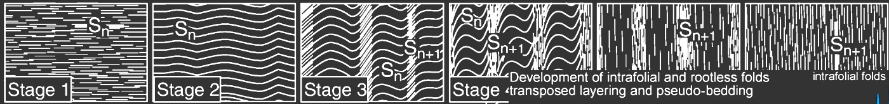
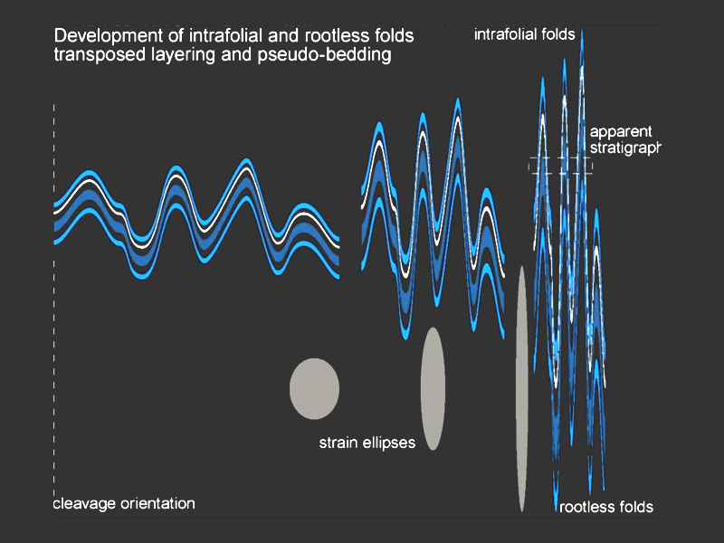
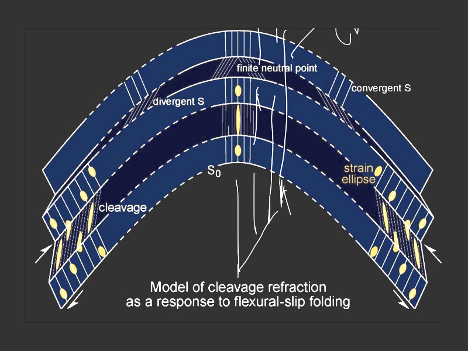

General Notes
The development of a new foliation parallel to the fold axial plane is called fold axial cleavage. This foliation is produced by the progressive tightening of folds under ongoing compression, and by the re-orientation of mineral grains parallel to the fold axial plane as deformation accumulates.

Transported Material Banding
- Rotation of rock fragments into a parallel orientation
- Isoclinal and intrafolial folds
- Bedding parallel to foliation, with asymmetric thinning directions

Axial-Planar Foliation
- Foliation develops during folding and is subparallel to the fold’s axial plane
- The orientation of foliation may change depending on the rock’s competence
